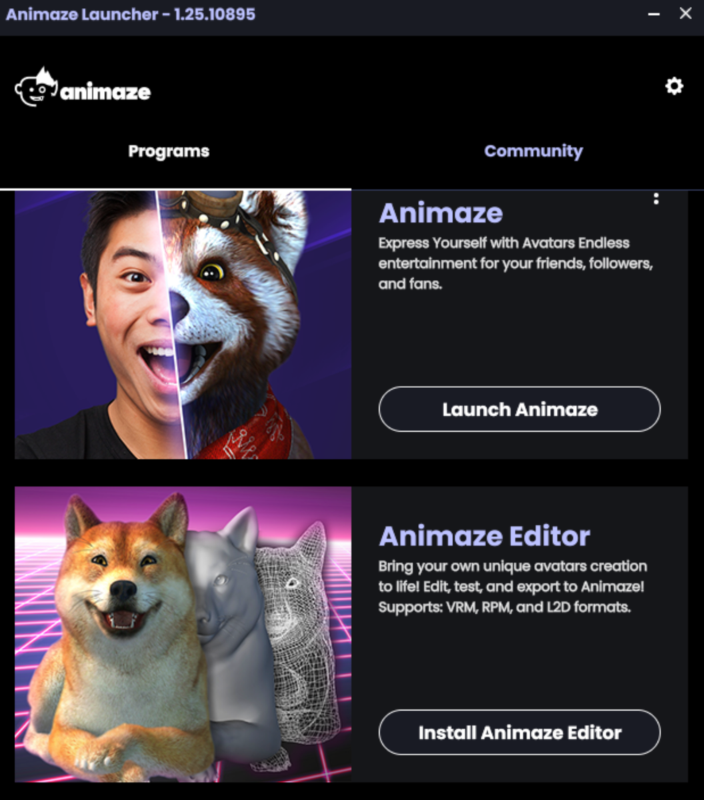

How can I install the Animaze Editor?
The Animaze Editor can be downloaded for free through two paths:
1 On the Animaze website
You can download the Animaze Editor on the Animaze website, along with the free version of the Animaze Desktop app. All you have to do is go to the individual plans on our website and download the Free version of Animaze.

2 On Steam
You can download the Animaze Editor from Steam by using these steps:
- Go to Steam > Library
- At the top of your game list there is a drop-down list (usually, it is set to GAMES)
- Click on the drop-down list and select TOOLS
- Scroll through the left side list and click on Animaze Editor
- Launch it as you would launch any Steam title.

If, for some reason, you can't find the Animaze Editor listed in the Tools section, there is a manual solution for that too. Use the Windows run command and type in steam://rungameid/1435710 and just run it (that is the app id for the Animaze Editor).
This method works for running (or installing) any app on Steam if you know its ID, without having to find it in the Steam App browser.